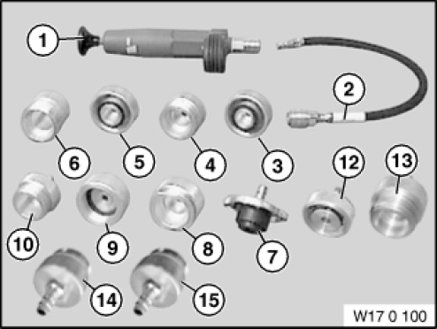

17 0 100 Tester
17 0 100 Tester
0494417
Minimum set: Mechanical tools
MW

NOTE: For checking engine cooling system on watertightness. For checking radiator cap. [Released]
SI number: 01 07 02 (884)
Consisting of:
1 = 0494418 Pump
NOTE: [Released]
2 = 0494419 Hose
NOTE: (Hose with quick-release coupling) [Released]
3 = 0494420 Adapter
NOTE: For radiator cap (normal thread) [Released]
4 = 0494421 Adapter
NOTE: For radiator cap (normal thread) [Released]
5 = 0494422 Adapter
NOTE: For radiator cap (sawtooth thread) [Released]
6 = 0494423 Adapter
NOTE: For radiator cap (sawtooth thread) [Released]
7 = 0494424 Adapter
NOTE: For radiator cap R50 / W10 [Released]
8 = 0494425 Adapter
NOTE: For radiator cap R50 / W10 [Released]
9 = 0494426 Adapter
NOTE: For radiator connection R53/W11, R50/W17 adapter corresponds to 17 0 051 [Released]
10 = 0494427 Adapter
NOTE: For radiator cap R53/W11, R50/W17 adapter corresponds to 17 0 052 [Released]
11 = 0494428 Case
NOTE: [Released]
12 = 0494642 Adapter
NOTE: For radiator cap Model series: E60, E61, E63, E64 SI no.: 1 08 03 (988) [Released]
13 = 0494643 Adapter
NOTE: For radiator cap Model series: E60, E61, E63, E64 SI no.: 1 08 03 (988) [Released]
14 = 0495889 Adapter
NOTE: For radiator cap Model series: N12, N14 [Released]